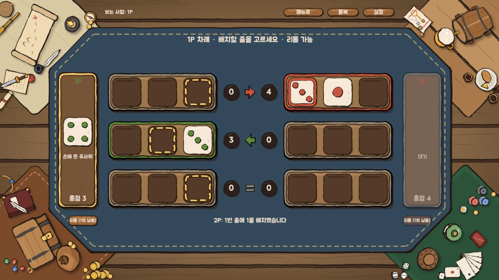
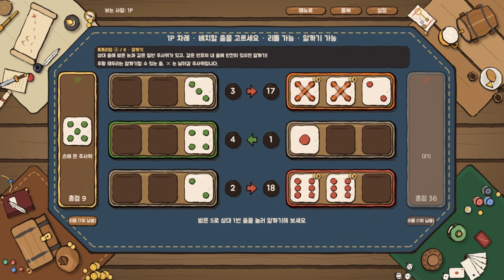
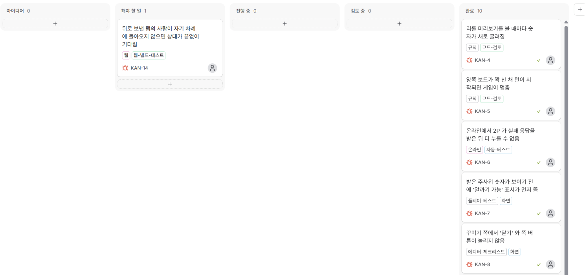
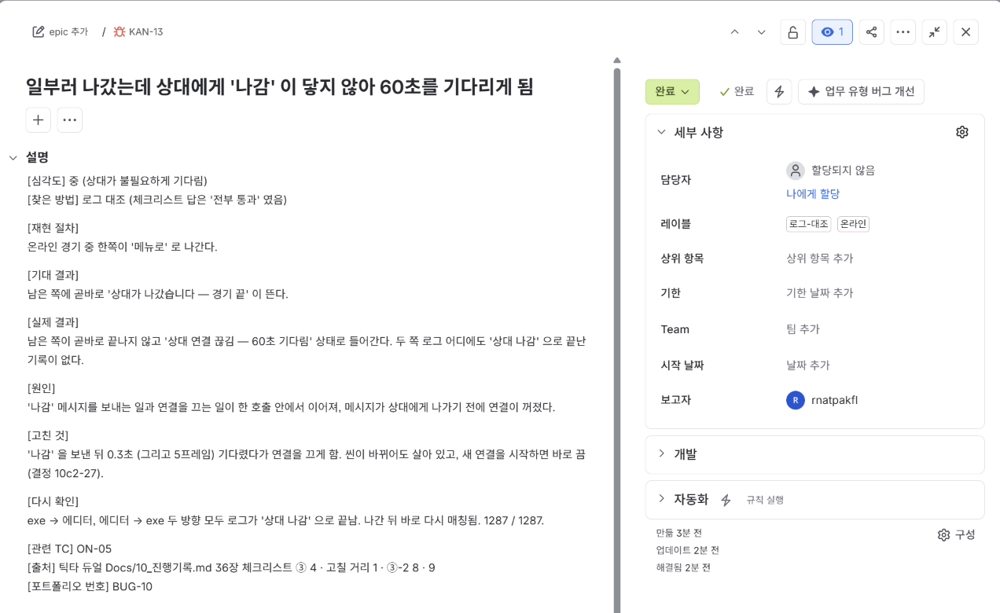

QA Document · 보드 · 1 대 1 대전
틱타 듀얼
주사위를 3 × 3 보드에 놓아 줄 점수를 겨루는 1 대 1 대전 게임입니다.
혼자 만들면서 규칙 문서를 테스트 케이스(TC)로, TC 를 실행 결과와 버그
기록으로 옮겼습니다.
개발 기간2026.09 ~ 진행 중수업 개인 프로젝트
팀 구성1명기획 · 프로그래밍 · 테스트
모드AI · 온라인 · 한 화면 둘AI 하 · 중 · 상 · 보스, 튜토리얼
개발 환경Unity 6.6Windows · 웹, Photon Fusion 2
- 한눈에 보기
- 테스트 계획 · TC
- 자동 실행
- 버그 기록
- Jira
- 배운 것 · 남은 것
01한눈에 보기
테스트 케이스157개자동 78 · 수동 79, 모두 통과
버그 기록11건고침 10 · 미해결 1
개발 중 쌓은 테스트1,287개2026-11-24 다시 실행, 전부 통과
무작위 플레이2,000판진행 멈춤 · 판 깨짐 0건


왼쪽은 경기 화면 (줄마다 점수 원이 있습니다). 오른쪽은 알까기 표시 —
상대 줄에서 날아갈 주사위에 × 가 뜹니다.
02테스트 계획 · TC
기대 결과는 모두 제가 쓴 규칙 문서(GameRules.md)의 장
번호나 결정 번호를 근거로 적었습니다. 근거가 없는 기대 결과는 쓰지
않았습니다.
| 항목 |
내용 |
| 목적 |
규칙 문서에 적힌 대로 게임이 움직이는지, 잘못 눌렀을 때 판이
망가지지 않는지 확인
|
| 범위 |
규칙 (점수 · 배치 · 턴 흐름 · 알까기 · 리롤 · 승패), 화면
흐름, 대전 화면의 피드백, AI 대전, 튜토리얼 · 룰북, 온라인
대전, 설정 · ESC, 끝 화면, 기록 · 업적 저장, 웹판
|
| 우선순위 |
상 = 규칙이 틀리거나 진행이 막힘 / 중 = 기능은 되지만 잘못
보이거나 불편 / 하 = 꾸밈. 상부터 실행
|
| 방법 |
자동 78개 — 규칙 코드를 콘솔 프로그램이 직접 실행해 기대 값과
비교. 수동 79개 — 화면 · 연출 · 온라인처럼 사람이 봐야 하는
것은 빌드에서 직접 누름
|
| 환경 |
Windows exe (1920 × 1080) · Unity 에디터 · 웹 빌드 (Chrome).
온라인은 한 컴퓨터에서 빌드 두 개
|
| 끝내는 기준 |
중요도 상인 TC 가 모두 통과하고, 실패한 TC 는 버그 기록으로
옮겨 다시 확인까지 마침
|
TC 를 만든 방법
| 기법 |
어디에 썼나 |
예 |
| 동등 분할 |
같은 결과가 나오는 입력을 한 묶음으로 보고 하나씩만 |
점수: 서로 다른 눈 / 2개 묶음 / 3개 묶음 |
| 경계값 |
값이 바뀌는 끝자리 |
빈 줄 0점 · 한 줄 최고 30점, 줄의 첫 칸 · 마지막 칸 · 꽉 참,
리롤 1번째와 2번째
|
| 판정표 |
조건 여러 개가 함께 결과를 정할 때 |
알까기 조건 4가지를 하나씩 어김. 줄 승수와 총점으로 승패를
가름
|
| 상태 전이 |
단계에 따라 할 수 있는 행동이 달라질 때 |
숫자 고르는 중에는 배치 · 알까기 불가, 보상 실드를 든 동안
리롤 · 알까기 불가
|
| 예외 |
하면 안 되는 행동을 일부러 |
꽉 찬 줄 누르기, 연출 중 연타, 상대 차례에 누르기, 경기 중
종료
|
| 탐색 (무작위) |
미리 생각하지 못한 순서 |
할 수 있는 행동 가운데 아무거나 골라 2,000판을 끝까지 |
03자동 실행
규칙 TC 는 판을 특정 모양으로 차려야 하는데, 손으로는 주사위 눈을 고를
수 없어 같은 판을 다시 만들기 어렵습니다. 그래서 눈을 정해 주는 가짜
주사위를 끼워 넣어 늘 같은 판이 나오게 했습니다.
판 차리기정해 둔 눈으로 보드를 TC 의 사전 조건대로 만든다
행동배치 · 알까기 · 리롤을 규칙 코드에 그대로 요청한다
비교실제 값을 글자로 만들어 기대 값과 맞춰 본다
기록결과가 csv 로 나와 TC 표의 결과 칸에 들어간다
규칙 코드는 엔진 참조가 없도록 따로 떼어 두어, Unity 없이 .NET
콘솔에서 그대로 실행할 수 있습니다.
-
규칙 TC 78개 — 실행 78 · 통과 78. 실제 값도 TC 표에 함께
남겼습니다.
-
무작위 2,000판 — 시드를 고정한 무작위 플레이어 둘이 끝까지
둡니다. 행동 47,320번 · 알까기 4,550번 · 리롤 1,850번에서 "판이 끝나지
않음 · 줄 중간 빈칸 · 할 수 있는 행동이 없음" 같은 위반이
0건이었습니다.
-
개발 중 쌓은 테스트 — 단계마다 테스트를 먼저 쓰고
구현했습니다. 처음 52개에서 지금 1,287개이고 전부 통과합니다.
-
한계 — 자동 TC 는 규칙 계산만 봅니다. 화면에 맞게 보이는지,
연출 중 입력이 막히는지, 온라인 두 화면이 같은지는 수동 TC 로
봤습니다.
04버그 기록
개발하면서 실제로 찾은 것 가운데 11건을 같은 양식 (재현 → 기대 → 실제
→ 원인 → 고친 것 → 다시 확인) 으로 적었습니다. 심각도는 상 5 · 중 4 ·
하 2 입니다. 아래는 그 가운데 세 건이고, 전체는 엑셀과 PDF 에
있습니다.
온라인에서 2P 가 실패 응답을 받은 뒤 더 누를 수 없음 — 심각도 상
- 재현
-
2P 가 꽉 찬 줄처럼 안 되는 줄을 눌러 요청을 보내고, 실패 응답이
보내는 도중에 바로 돌아온다
- 실제
-
"답을 기다리는 중" 표시가 켜진 채 남아 2P 의 클릭이 모두
무시된다
- 원인
-
요청을 보낸 뒤에 표시를 켰다. 응답이 먼저 와서 표시를 끄면, 그
뒤에 다시 켜 버렸다 (순서 문제)
- 고침
-
표시를 보내기 전에 켜도록 순서를 바꿈. 손으로는 거의 재현되지
않아, 응답이 곧바로 오는 가짜 연결을 만든 자동 테스트가 찾았다
일부러 나갔는데 상대가 60초를 기다리게 됨 — 심각도 중
- 재현
- 온라인 경기 중 한쪽이 "메뉴로" 로 나간다
- 실제
-
남은 쪽이 곧바로 끝나지 않고 "상대 연결 끊김 — 60초 기다림"
상태로 들어간다
- 원인
-
"나감" 메시지를 보내는 일과 연결을 끄는 일이 한 호출 안에서
이어져, 메시지가 나가기 전에 연결이 꺼졌다
- 고침
-
"나감" 을 보낸 뒤 잠깐 기다렸다가 연결을 끄게 함. 체크리스트
답은 "전부 통과" 였고, 두 쪽 로그를 맞춰 보다가 찾았다
웹 빌드에서 온라인 대전이 안 되고, 안내 문구가 원인과 다름 — 심각도
상
- 재현
- 웹 빌드를 브라우저에서 열고 "온라인 대전" 을 누른다
- 실제
-
화면이 잠깐 떴다가 모드 선택으로 돌아간다. 문구는 "인터넷 연결을
확인하세요" 인데 실제 이유는 연결 설정이었다
- 원인
-
쓰던 연결 방식이 웹 빌드에서는 기본으로 막혀 있었고, 실패 문구가
이유를 가리지 않고 하나였다
- 고침
-
exe 와 웹 모두 다른 연결 방식으로 옮기고, 실패 문구를 이유별 세
가지로 나눔. 웹과 exe 가 한 방에서 만나 한 판을 끝까지 두는
것까지 확인
05Jira
버그 기록 11건을 Jira 에 버그 유형으로 올려 보드 · 우선순위 · 레이블로
관리해 봤습니다. 개인 프로젝트에서 혼자 써 본 것입니다.

보드. 고친 10건은 "완료", 미해결 1건은 "해야 할 일" 에 있습니다.
카드마다 영역과 찾은 방법을 레이블로 붙였습니다.

작업 항목 하나. 설명에 재현 절차 · 기대 결과 · 실제 결과 · 원인 ·
고친 것 · 다시 확인 · 관련 TC 번호를 같은 순서로 적었습니다.
-
올린 방법 — 버그 기록을 CSV 로 내보내 Jira 의 CSV 가져오기로
한 번에 넣고, 상태는 올린 뒤 보드에서 옮겼습니다.
-
정한 규칙 — 제목은 "무엇이 어떻게 잘못되는지" 한 줄.
레이블은 영역(규칙 · 온라인 · 화면 · 웹)과 찾은 방법 두 가지.
-
TC 와 잇기 — TC 는 엑셀에 두고, 버그 설명 끝에 관련 TC 번호를
적어 이었습니다.
06배운 것 · 남은 것
-
"전부 통과" 라는 답만으로는 부족했습니다. 버그 두 건은
체크리스트가 모두 통과라고 답한 뒤 로그에서 나왔습니다. 플레이 확인
다음에는 로그의 예외 수와 상태 기록을 답과 맞춰 봅니다.
-
한 환경에서 통과한 테스트가 다른 환경에서 실패할 수 있습니다.
같은 테스트가 .NET 에서는 통과하고 Unity 에서는 실패한 일이 있어,
두 실행 환경을 모두 돌립니다.
-
오류 문구가 원인과 다르면 찾는 시간이 길어집니다. 실패 문구를
이유별로 나누는 것도 고침에 넣었습니다.
-
아직 확인하지 못한 것 — 수동 79개 가운데 로그로 뒷받침되는
것은 13개이고, 나머지 66개는 빌드에서 눈으로 확인한 결과입니다.
서로 다른 네트워크의 두 컴퓨터 사이 온라인, 휴대폰 브라우저, 차례
시간 제한(미해결 1건)도 남아 있습니다.